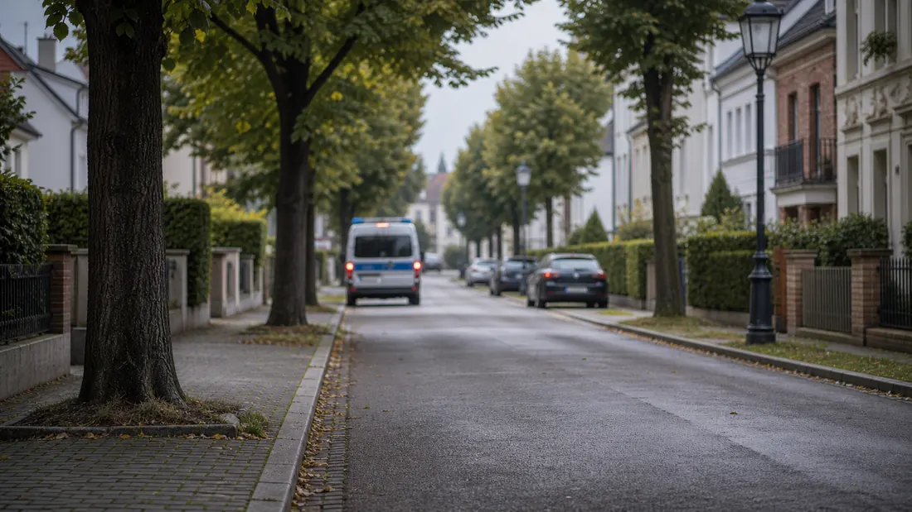

Wiesbaden · Politik
Rekordjahrgang: Wiesbadener Musikakademie begrüßt 30 neue Studierende
Mit 30 neu aufgenommenen Studierenden verzeichnet die Wiesbadener Musikakademie (WMA) zum Wintersemester 2026/2027 einen neuen Höchststand.
Hessen Aktuell
Regionale Meldungen für Wiesbaden, mit lokalen Quellen, Themenüberblick und Tagesarchiv an einem Ort.
Topmeldung
Wiesbaden · Politik
Mit 30 neu aufgenommenen Studierenden verzeichnet die Wiesbadener Musikakademie (WMA) zum Wintersemester 2026/2027 einen neuen Höchststand.
Meldungen

Wiesbaden · Politik
Auf dem Friedhof Kostheim ist es in den vergangenen Nächten zu einer größeren Serie von Edelmetalldiebstählen gekommen. Weitere Details, Hintergründe und vollständige Angaben stehen in der verlinkten Originalmeldung.

Wiesbaden · Politik
Die U.S. Army Garrison Wiesbaden, die Landeshauptstadt Wiesbaden und das Land Hessen freuen sich, die Bürgerinnen und Bürger der Region zum traditionellen Weihnachtskonzert am Freitag, 11. Dezember, einzuladen.

Wiesbaden · Politik
Dr. Christian Henschke wird neuer Leiter des Umweltamts der Landeshauptstadt Wiesbaden. Er folgt ab Mitte Januar 2027 auf Dr. Klaus Friedrich, der das Amt seit Mai 2020 geleitet hat und Ende Februar 2027 in den Ruhestand geht.
Wiesbaden · Politik
Das Kunsthaus Wiesbaden, Schulberg 10, eröffnet am Mittwoch, 2. Dezember, um 19 Uhr die Ausstellung „Wie herum steht die Welt eigentlich richtig auf dem Kopf? – Perspektivwechsel mit Titus Grab“.

Wiesbaden · Verkehr
Wiesbaden (ots) - 1. Streitigkeiten und Widerstand gegen Vollstreckungsbeamte Mainz-Kastel, Kloberstraße Sonntag, 22.11.2026, 11.40 Uhr (nn) Am Sonntagvormittag kam es in Mainz-Kastel in der Kloberstraße zu Streitigkeiten zwischen mehreren ...

Wiesbaden · Polizei
Wiesbaden (ots) - Rücknahme der Vermisstenmeldung nach 14-Jährigem, Wiesbaden, Montag, 23.11.2026 (da)Die am 17. November veröffentlichte Vermisstenfahndung nach einem 14-Jährigen aus Wiesbaden wird hiermit zurückgenommen. Der Vermisste konnte ...

Wiesbaden · Polizei
Wiesbaden (ots) - Einbrecher nutzen insbesondere die dunkle Jahreszeit, um in Wohnungen und Häuser einzudringen. Die hessische Polizei hat ihre Kontrollen, gezielte Fahndungsmaßnahmen und Präventionsarbeit zur Bekämpfung von ...

Wiesbaden · Polizei
Wiesbaden (ots) - 1. Rabiater Ladendieb landet im Gefängnis, Wiesbaden, Mitte, Langgasse, Freitag, 20.11.2026, 17:49 Uhr (cp)Ein Ladendieb verletzte am Freitagabend in Wiesbaden einen Angestellten eines Optikergeschäfts, nachdem dieser ihn beim ...